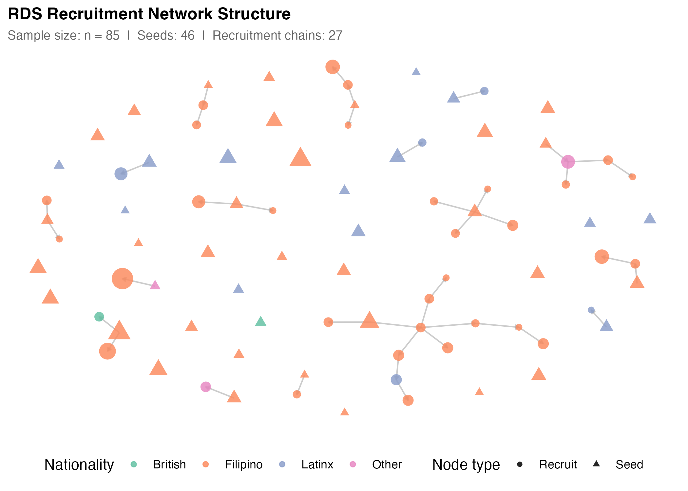
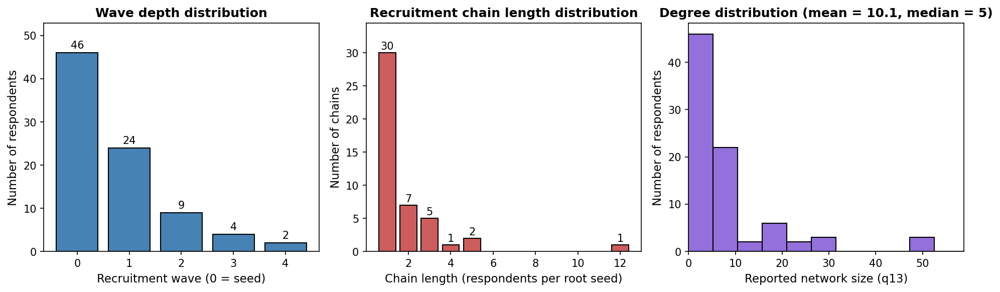
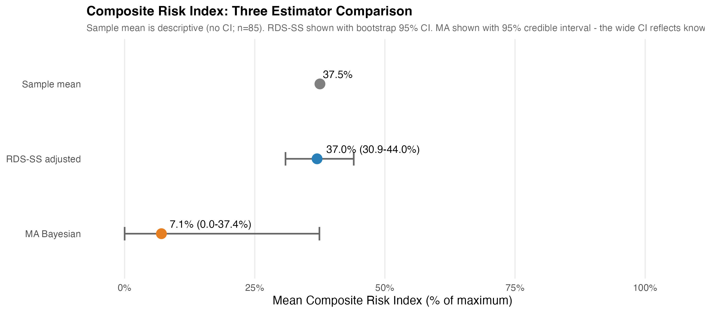
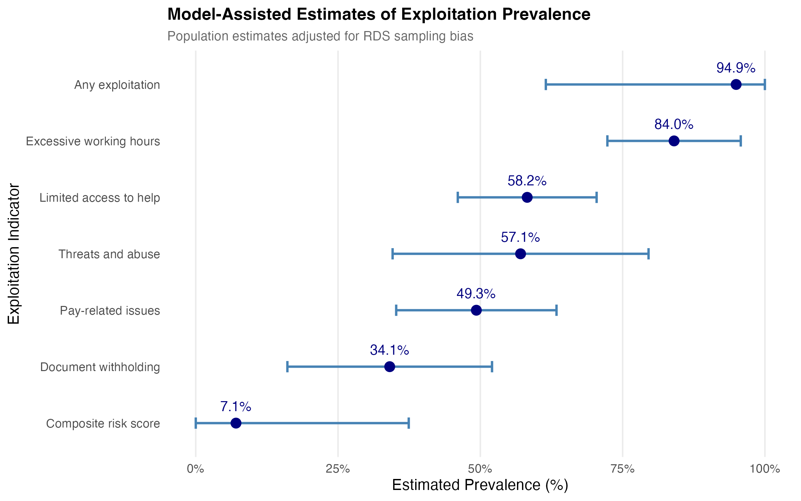

Quantifying Hidden Exploitation: Dual-Method Prevalence Estimates of Labour Exploitation among Domestic Workers in the United Kingdom
Reliable indicators for SDG Target 8.7 are difficult to construct because the populations most affected by labour exploitation are often absent from standard household and labour-force surveys. This paper develops a matched ego/alter survey design for measuring labour exploitation among hidden populations. We apply respondent-driven sampling and a network scale-up approach to the same survey instrument, asking migrant domestic workers in the United Kingdom both about their own experiences and about exploitation among domestic workers they know. The design produces two complementary estimands: own-experience prevalence and network-visible prevalence. We measure five ILO-aligned indicators: excessive working hours, pay-related issues, limited access to help, threats and abuse, and document withholding. We also construct a formative composite risk index to capture gradations of exploitation severity. In a civil-society-mediated web-RDS sample of 85 migrant domestic workers, RDS-SS estimates indicate high own-experience prevalence, while network scale-up estimates are substantially lower. The divergence is consistent with a visibility gradient in which some exploitation behaviours are more observable across peer networks than others. The results should be interpreted as exploratory population-adjusted estimates for an RDS-reachable population rather than definitive national prevalence figures. The relative ordering of prevalence of different forms of labour exploitation are robust across a number of parameters. The paper contributes a replicable measurement design for hidden-population social indicators relevant to SDG 8.7 monitoring.
1 Introduction
Modern slavery – defined in UK law as an umbrella term which includes slavery, servitude, forced labour, and human trafficking – is named under Sustainable Development Goal Target 8.7 as a priority for elimination by 2030. Reliable prevalence measurement is a precondition for monitoring that target, yet the populations most affected are largely invisible to the household and labour-force surveys on which official social indicators rely. Conventional household surveys underestimate prevalence in this domain by an order of magnitude or more, both because the populations affected (undocumented migrants, live-in domestic workers, sex workers, agricultural day labourers) are excluded from sampling frames, and because exploitation behaviours – especially those at the more severe end of the spectrum – are typically not self-reported even when the respondent is contacted. The civil-society and grey-literature evidence base on UK domestic workers (Kalayaan, 2008; Service, 2023) is qualitatively rich but does not yield population-level prevalence estimates suitable for SDG monitoring or comparison across populations. The International Labour Organization’s eleven indicators of forced labour (International Labour Organization, 2012, 2025) provide an operational framework for measuring modern slavery, but the empirical question of which indicators are observable through which survey design remains open. Studies typically apply one design – household survey, respondent-driven sampling (RDS), or the network scale-up method (NSUM) – and report prevalence accordingly. No prior study of modern-slavery prevalence, to our knowledge, applies both RDS and NSUM to a single matched survey instrument. Such a design would enable direct triangulation of ego- and alter-based estimates on identical indicators and, where they diverge, diagnostic inference about which exploitation behaviours are visible across personal networks.
This paper makes two contributions. First, we apply RDS and NSUM to the same survey instrument with the same respondents, eliciting ego-based and alter-based estimates of an identical set of five ILO-aligned indicators. The dual-method design produces two complementary estimands (own-experience prevalence from RDS, network-visible prevalence from NSUM); where they diverge, the gap itself is diagnostic evidence about the visibility gradient of different exploitation behaviours within workers’ personal networks. Second, we treat modern slavery as a graded phenomenon rather than a binary condition. The ILO’s eleven indicators of forced labour (International Labour Organization, 2012, 2025) anchor the operational framework, and the ILO’s survey-guidelines handbook (International Labour Organization, 2024) distinguishes three ‘strong’ indicators (retention of identity documents, intimidation and threats, and physical and sexual violence) — any one of which is generally sufficient to identify forced labour in survey settings — from eight ‘medium’ indicators, several of which typically need to co-occur. The ordering supports both indicator-level prevalence estimates and a composite risk index. Taken together, the contribution of the paper is best read as developing and demonstrating a defensible social-indicator measurement strategy for hidden-population exploitation rather than as producing a definitive national prevalence estimate. We demonstrate the strategy with a respondent-driven sample of UK migrant domestic workers and discuss how the methodology generalises to other hidden populations relevant to SDG 8.7 monitoring.
The remainder of the paper is organised as follows. Section 2 conceptualises labour exploitation as a graded formative indicator framework measured by five ILO-aligned indicators arranged hierarchically by severity. Section 3 describes the matched-instrument survey design (Section 3.1) and the dual sampling approach combining RDS and NSUM (Section 3.2). Section 4 presents prevalence estimates by indicator and method, including frequentist RDS-I/RDS-II/RDS-SS estimators (Section 4.1), Bayesian Model-Assisted inference (Section 4.2), and NSUM with sensitivity analysis (Section 4.3). Section 5 reads the RDS-NSUM divergence as diagnostic evidence about visibility within workers’ personal networks and discusses implications for SDG 8.7 monitoring.
2 Conceptualising Labour Exploitation and the Degree of Risk
The International Labour Organization’s eleven indicators of forced labour (International Labour Organization, 2012, 2025) provide the canonical operational framework for measuring modern slavery. The ILO’s own survey-guidelines handbook (International Labour Organization, 2024) distinguishes two operational categories for use in forced-labour surveys: ‘strong’ indicators (intimidation and threats, physical and sexual violence, retention of identity documents) any one of which is generally sufficient on its own to identify a survey respondent as in forced labour, and ‘medium’ indicators (excessive overtime, wage withholding, debt bondage, restriction of movement, isolation, abusive working and living conditions, abuse of vulnerability, deception) whose evidentiary weight for survey-based identification typically requires more than one to be present. We adopt this severity ordering — as it appears in the ILO survey-guidelines handbook rather than the shorter operational-indicators publications (International Labour Organization, 2012, 2025), which list the eleven without ranking them — to organise the reporting of the five binary indicators below and to structure the reporting of the composite risk index. We measure five indicators across the ordering, chosen to span the ILO conceptual space efficiently within the constraints of a matched-instrument ego/alter survey design. Three are medium indicators – excessive working hours, pay-related issues (combining wage withholding with elements of debt bondage), and limited access to help (combining restriction of movement with isolation, as both manifest in the same observable behaviour in the domestic-work context). Two are strong indicators – threats and abuse (combining intimidation/threats with physical and sexual violence, which prior qualitative work suggests co-occur in this population: Yilmaz & Emberson (2023)) and document and passport withholding. The specific bundling of ILO indicators into these five binary measures (e.g., combining intimidation/threats with physical and sexual violence into a single ‘threats and abuse’ indicator) is our analytical choice, informed by the qualitative and civil-society literature on UK migrant domestic workers (Kalayaan, 2008; Mantouvalou, 2016; Service, 2023; Yilmaz & Emberson, 2023), not a mapping the ILO itself publishes. The remaining two ILO indicators – abuse of vulnerability and deception – are not measured as standalone binary prevalence indicators: both are too retrospective and judgemental to elicit reliably through a brief survey of n=85 respondents (the respondent would need to reconstruct intent and knowledge states from the perspective of months or years after the fact). Both are nonetheless included in the composite risk index (Appendix Table A.1, Categories 1 and 2; results in Section 4.2). Where appropriate we note this scope limitation in the discussion of results.
The composite risk index aggregates all eleven ILO indicators of forced labour into a single continuous measure (Section 3.2, Table 1; Appendix Table A.1 for per-category weights). It is constructed as a formative additive composite: an individual is exposed to exploitation if any of the indicators is present, and the indicators are constitutive rather than reflective of an underlying severity. We conduct robustness assessment by perturbing the weights (Section 5.5). Two further evidentiary markers, NRM-referral history and payment below the national living wage, are reported as separate binary flags and are not part of the composite, as their direct evidentiary status under UK policy makes them more useful read independently.
2.1 Evaluating the Degree of Risk
We conceptualise risk of labour exploitation from the workers’ perspective, spanning a spectrum from illegal employment practices (below-minimum-wage payment, health and safety violations) through to forced labour and modern slavery. The more ILO indicators present, the stronger the likelihood of exploitation. We operationalise this in two complementary ways: binary indicators classifying respondents as exploited or not on each ILO-aligned dimension (threshold criteria, Section 4.3) and a continuous formative additive composite risk index capturing gradations of vulnerability across all eleven ILO indicators (Section 4.2; the Appendix, Section A, for full construction).
3 Case Setting: Labour Exploitation Risk Among Transnational Migrant Domestic Workers In The UK
Domestic work in the United Kingdom is performed predominantly by transnational migrant women, the majority entering on tied Overseas Domestic Worker (ODW) visas under which the right to remain is conditional on employment with a specific employer (Kalayaan, 2008; Mantouvalou, 2016; Service, 2023). The combination of tied immigration status, work performed inside the private home, and the absence of routine workplace inspection creates structural conditions under which labour exploitation can occur unobserved by employment regulators, mainstream labour-market surveys, and the police (Romero & Fisher, 2025). Civil-society organisations representing migrant domestic workers have documented patterns of wage withholding, document confiscation, restricted movement, excessive working hours, and threats and abuse over more than two decades (Kalayaan, 2008; Mantouvalou, 2016; Service, 2023; Yilmaz & Emberson, 2023). However, qualitative and case-based evidence have not yielded population-level prevalence estimates suitable for SDG 8.7 monitoring or cross-population comparison. The UK migrant domestic worker case is therefore well-suited as the testbed for a measurement methodology aimed at producing comparable prevalence indicators for hidden, civil-society-mediated populations relevant to SDG 8.7 reporting. The methodology demonstrated here generalises to other hidden populations sharing the structural features of tied employment, private-home workplaces, and civil-society-mediated access.
3.1 Study Design and Sampling
Respondent-Driven Sampling (RDS) is a network-based sampling method designed to study hidden or hard-to-reach populations (Gile et al., 2018; Heckathorn, 1997; Heckathorn, 2011). It combines chain-referral sampling with a statistical framework to produce population estimates that adjust for network structure and differential recruitment probabilities. The method begins with a set of initial participants (“seeds”), who recruit peers from their social networks. Recruits, in turn, recruit others, creating waves of participation. The number of each participant’s recruits implicitly proxies for their network degree (the number of eligible contacts they know), which is used to adjust for selection bias–especially the oversampling of high-degree individuals.
RDS has been widely used to sample hidden populations in public health and social science research (McCreesh et al., 2012; Schwitters et al., 2012), and network-based referrals have been described as the only viable method to reach many types of labour trafficking victims (Zhang, 2012). Recent applications include studies of exploitation among low-wage workers in American cities (Bernhardt et al., 2009), labour trafficking in migrant communities (Vincent & Thompson, 2017), child labour in India (Zhang et al., 2019), and commercial sexual exploitation in Nepal (Jordan et al., 2020).
Our approach can best be described as Web-based RDS (Wejnert & Heckathorn, 2008). We designed a web survey using the JISC online survey interface, suitable for respondents to complete via mobile phone. The main survey was conducted over five months between February and July 2023.
Seed Selection and Recruitment
We selected our first wave of participants nonrandomly by convenience sampling. Mobile phone numbers were used both to identify seed participants and to act as a unique identifier for those whom they referred. To avoid sample homophily, original sample members were selected from three distinct domestic worker communities facilitated by civil society organisations. One was an exclusively online community of transnational domestic workers working in the UK, the second represented UK domestic workers of Filipino origin, and the third drew its membership from the Latin American community of domestic workers, also in the UK. Representatives from these organisations, along with other academics with expertise in exploitation within domestic work, contributed to survey question design and facilitated piloting of an initial version of the survey, which was translated and made available in four languages: English, Spanish, Tagalog, and Portuguese.
Incentive Design and Participation Verification
A double incentive scheme rewarded respondents both for completing the questionnaire and for each referral who went on to engage with the survey. The challenge of incentive design is to set the incentive at a level that adequately rewards respondents’ time and participation, but that also avoids the risk of fraudulent participation due to too high a monetary gain (Jordan et al., 2020). A sum of £10 was provided for survey completion with a further £5 for each successful nomination. While respondents were asked to nominate up to 10 domestic workers within their existing social network, participation from up to five of these was requested in subsequent waves. This approach is akin to the use of vouchers in face-to-face studies as advocated by Thompson (2020).
Respondents were incentivised through lottery entry, consistent with the design recommendations of the survey-incentive literature (full literature review and incentive-design details in the Appendix, Section D.7).
3.2 Survey Instrument and Indicators
The survey instrument was designed to capture both egocentric (ego-based) and altercentric (alter-based) network information, enabling the application of both RDS and NSUM estimation methods. Composite measures to quantify the extent to which respondents were at risk of labour exploitation, including severe forms of exploitation such as forced labour, were constructed from existing exploitation typologies, notably the ILO’s Indicators of Forced Labour (International Labour Organization, 2012, 2025) and the associated survey-guidelines handbook (International Labour Organization, 2024). The eleven ILO indicators of forced labour (International Labour Organization, 2012, 2025) provide the operational framework for our measurement strategy; the medium/strong severity ordering used to organise the indicators follows the ILO handbook on forced-labour surveys (International Labour Organization, 2024). Table 1 (below) maps each ILO indicator to its measurement status in this paper: whether it is measured directly as a binary prevalence indicator (reported in Section 4.3), whether it is included in the formative additive composite risk index (reported in Section 4.2), and which survey questions elicit the ego- and alter-based reports.
| # | ILO indicator (2012, 2017) | Severity | Binary indicator | Composite | Survey item(s) |
|---|---|---|---|---|---|
| 1 | Abuse of vulnerability | Medium | – (composite only) | Cat 1 | Q29, Q51 |
| 2 | Deception | Medium | – (composite only) | Cat 2 | Q45 |
| 3 | Restriction of movement | Medium | Limited access to help | Cat 3 | Q32, Q46 |
| 4 | Isolation | Medium | Limited access to help | Cat 4 | Q65 |
| 5 | Physical and sexual violence | Strong | Threats and abuse | Cat 5 | Q44 (5c1, 5c1-b) |
| 6 | Intimidation and threats | Strong | Threats and abuse | Cat 6 | Q47 |
| 7 | Retention of identity documents | Strong | Document withholding | Cat 7 | Q70 |
| 8 | Withholding of wages | Medium | Pay-related issues | Cat 8 | Q42 |
| 9 | Debt bondage | Medium | Pay-related issues | Cat 9 | Q39 |
| 10 | Abusive working and living conditions | Medium | Partial (Q48) | Cat 10 | Q48, Q63, Q72, Q76 |
| 11 | Excessive overtime | Medium | Excessive working hours | Cat 11 | Q16, Q61, Q62 |
Based on this mapping, we operationalise exploitation in two ways: (1) five binary prevalence indicators classifying respondents as exploited or not exploited on each dimension based on threshold criteria (Section 4.3), and (2) one continuous formative additive composite risk index designed to capture gradations of vulnerability across the full sample (Section 4.2).
Ego-based questions capture respondents’ own experiences of exploitation (used for RDS estimation), while alter-based questions ask respondents to report on the exploitation experiences of domestic workers they know (used for NSUM estimation). See the Appendix (Sections A and B) for details of these survey questions and the construction of comparable ego- and alter-based indicators.
3.3 Sample Characteristics
In total, we received completed online surveys from 97 respondents. Twelve participants reported knowing zero domestic workers in the UK and were excluded from RDS analysis because network degree information is required for RDS weighting procedures. This resulted in an analytical sample of 85 respondents for RDS-based estimation. Although the analytic sample comprises 85 respondents, this is within the range used in comparable respondent-driven sampling (RDS) and network scale-up (NSUM) studies of hidden populations (Gile, 2011; Gile & Handcock, 2010; Goel & Salganik, 2010). Statistical inference in these designs depends not on the absolute sample size but on the structure of the recruitment network, degree distribution, and convergence to equilibrium (Salganik & Heckathorn, 2004). Furthermore, model-assisted and Bayesian RDS estimators (Gile, 2011; Gile et al., 2018) can produce model-assisted, population-adjusted estimates under explicit assumptions, even in modest samples, provided uncertainty and design limitations are made transparent. In this study, we additionally employ a neighbourhood bootstrap procedure that propagates sampling and network uncertainty, providing robust confidence intervals consistent with small-sample design-based inference (Handcock et al., 2014).
Of the 97 initial respondents, 90 identified themselves as transnational migrants. In the analytical sample of \(n = 85\) (Table 2), 47% regarded themselves as self-employed, 37% identified themselves as employees, and 17% categorised their employment status as agency workers. Filipino respondents constitute the largest nationality cluster (65 respondents, 76% of the analytical sample; Table 3 for the full nationality × wave breakdown); other nationalities represented include Dominican, Brazilian, Spanish, Colombian, Bolivian, Venezuelan, Cuban, and Panamanian. Female domestic workers made up 98% of the analytical sample, with the remaining 2% male. The age structure is skewed towards older workers: 49% of respondents are aged 45+, and a further 26% are aged 35–40 (Table 2).

data/processed/prepared_data.csv.
| Characteristic | Category | n | % |
|---|---|---|---|
| Gender | Female | 83 | 97.6% |
| Male | 2 | 2.4% | |
| Age | 23–25 | 1 | 1.2% |
| 26–35 | 20 | 23.5% | |
| 35–40 | 22 | 25.9% | |
| 45+ | 42 | 49.4% | |
| Employment status | Self-employed | 40 | 47.1% |
| Employee | 31 | 36.5% | |
| Agency worker | 14 | 16.5% | |
| Length of time in UK | Less than 3 months | 3 | 3.5% |
| 3 months to 1 year | 19 | 22.4% | |
| 1 to 3 years | 14 | 16.5% | |
| More than 3 years | 49 | 57.6% |
| Nationality cluster | Wave 0 (seeds) | Wave 1 | Wave 2 | Wave 3+ | Total (n) |
|---|---|---|---|---|---|
| Filipino | 35 | 18 | 9 | 3 | 65 |
| Latinx | 4 | 2 | 0 | 0 | 6 |
| British | 2 | 0 | 0 | 0 | 2 |
| Other | 5 | 5 | 2 | 0 | 12 |
| Total | 46 | 25 | 11 | 3 | 85 |
3.4 Estimation Framework
Before describing each estimator in turn, Table 4 summarises the information each method uses, the population quantity each method targets (its estimand), and the principal source of identification risk for each. The four estimators do not target the same quantity. RDS-SS and MA-RDS estimate own-experience prevalence among the RDS-reachable population of migrant domestic workers; NSUM estimates network-visible prevalence among domestic-worker alters as reported by the respondent; the composite risk index targets the RDS-adjusted mean severity score. The order-of-magnitude RDS–NSUM gap should not be read as two methods disagreeing about the same estimand. RDS estimates own-experience prevalence, whereas NSUM estimates network-visible prevalence among alters; the divergence is therefore substantively interpretable rather than merely a discrepancy.
| Method | Information used | Estimand | Main vulnerability |
|---|---|---|---|
| RDS-SS (binary, preferred) | Respondent’s own experience + reported degree + recruitment-chain structure | Own-experience prevalence among the RDS-reachable population of UK migrant domestic workers | Seed dependence, shallow recruitment chains, homophily, unobserved degree heterogeneity |
| MA-RDS (supporting) | Same as RDS-SS, plus a working Exponential Random Graph network model | Model-assisted own-experience prevalence (same target as RDS-SS, with network-structure adjustment) | Network-model misspecification, convergence limits at small \(n\); does not converge on continuous outcomes |
| MBSU NSUM (binary, preferred) | Respondent reports about alters in their personal network | Network-visible prevalence among domestic-worker alters in the respondents’ aggregated network | Transmission bias, visibility gradient across exploitation behaviours, alter misclassification, unknown true-positive rate (\(\tau\)) |
| Composite risk index | Respondent’s own indicator profile across all eleven ILO indicators | RDS-adjusted population mean of the formative-additive severity score | Weight specification, construct validity, formative-vs-reflective measurement assumptions |
To the best of the authors’ knowledge, the combined use of both methods in the same study is rare in peer-reviewed academic research, though it has appeared in government-funded reports and technical documents from NGOs and research organizations (Hickman et al., 2025; IST Research & University of California, Los Angeles, 2020). This paper contributes to the emerging methodological literature on combining RDS and NSUM in survey research for hidden populations. We also developed a novel three-step bootstrap procedure to address uncertainty in NSUM estimates.
RDS Estimation: We implemented three RDS estimators, each with distinct assumptions: RDS-I (Salganik & Heckathorn, 2004), the Volz–Heckathorn (VH) estimator (Volz & Heckathorn, 2008), and Gile’s Successive Sampling (RDS-SS) estimator (Gile, 2011). Given our small sample (85 respondents) and non-negligible sampling fraction, RDS-SS serves as our primary estimator for binary outcomes because it accounts for finite population effects. RDS-I, which performs poorly in small samples and is highly sensitive to seed dependence, is retained as a historical benchmark.
For continuous outcomes such as the exploitation risk index, we employ Model-Assisted (MA-RDS) estimators (Gile & Handcock, 2015). MA-RDS is design-based yet leverages a working Exponential Random Graph Model (ERGM) with degree and homophily terms to approximate inclusion probabilities conditional on observed seeds. This approach directly addresses seed bias and homophily that conventional RDS estimators cannot correct, accommodates finite-population effects through successive-sampling logic, and supports valid estimation of both binary and continuous outcomes. By conditioning on actual seed composition and subgroup structure, the method reduces bias, improves efficiency, and provides design-compatible bootstrap uncertainty (Gile, 2011). We note one important limitation: the MA-RDS implementation in the RDS package (MA.estimates()) is designed primarily for binary traits, and we find that for the continuous composite risk index it does not converge to a useful posterior at our sample size (\(n=85\)); the credible interval covers essentially the full support of the variable. We therefore report frequentist RDS-SS estimates as the headline for the composite index and reserve MA-RDS estimates for the five binary indicators (see Section 4.4 and the Appendix D.2).
Within-Population Scale-Up Estimation (NSUM): We employ the Modified Basic Scale-Up (MBSU) logic of Feehan & Salganik (2016) in a non-standard, within-population configuration. In standard NSUM, respondents are usually sampled from a frame population and report how many people they know in a hidden population. Here, by contrast, respondents are themselves UK migrant domestic workers and report on other UK migrant domestic workers they know. We therefore treat the design as a within-population scale-up or alter-report network prevalence design: the target quantity is not the absolute size of the hidden population, but the network-visible prevalence of exploitation indicators among domestic-worker alters in respondents’ personal networks. This estimand differs from the standard NSUM estimand and is documented in Table 4 above.
Let \(H_h\) denote the subset of domestic-worker alters who truly have exploitation indicator \(h\), and let \(F\) denote the domestic-worker alter universe induced by the survey’s tie definition (the frame). For respondent \(i\), let \(y_{ih}\) be the reported number of known domestic-worker alters with indicator \(h\), and let \(d_i^{DW}\) be respondent \(i\)’s reported number of known UK migrant domestic workers. The quantity \(d_i^{DW}\) is therefore a domestic-worker alter degree: it is the denominator for the alter reports \(y_{ih}\), not respondent \(i\)’s total personal network size in the usual NSUM sense.
The unadjusted within-population NSUM estimator is
\[ \hat p_h^{NSUM} = \frac{\sum_i w_i y_{ih}}{\sum_i w_i d_i^{DW}}, \tag{1}\]
where \(w_i\) is the RDS-derived survey weight. This estimator is a weighted alter-level proportion: it estimates the share of reported domestic-worker alters who are reported to have indicator \(h\). It should therefore be interpreted as a measure of network-visible prevalence among domestic-worker alters, rather than as a direct estimate of own-experience prevalence among respondents.
The MBSU-adjusted prevalence is then
\[ \hat p_h^{MBSU} = \frac{1}{\delta_h \tau_h} \frac{\sum_i w_i y_{ih}}{\sum_i w_i d_i^{DW}}. \tag{2}\]
Here, \(\delta_h\) is the indicator-specific within-population degree-ratio adjustment: it captures whether domestic workers with indicator \(h\) have, on average, more or fewer within-domestic-worker network ties than domestic workers overall. Values of \(\delta_h < 1\) imply that workers with indicator \(h\) are less connected within the domestic-worker network and would therefore be under-represented in alter reports. The parameter \(\tau_h\) is the indicator-specific true-positive or visibility rate: the probability that an alter who truly has indicator \(h\) is recognised and reported by the respondent as having that indicator. Values of \(\tau_h < 1\) capture under-reporting due to stigma, concealment, limited observability, or social distance.
Because both the reporting frame and the alter universe are restricted to domestic workers, \(\delta_h\) should not be read as a general-population-to-hidden-population degree ratio. It is instead a within-domestic-worker correction for differential network visibility of workers with indicator \(h\). Similarly, \(\tau_h\) captures peer-tie visibility for each exploitation indicator. This distinction is central to the paper’s visibility-gradient diagnostic: when RDS own-experience estimates exceed NSUM alter-report estimates, the difference is interpreted not simply as disagreement between methods, but as evidence that some exploitation behaviours are less visible in peer networks than others (Section 5.3).
Our headline NSUM result is the continuous-\(\tau\) sweep: for each indicator, we report prevalence as a function of \(\tau_h \in [0.40, 1.00]\), in increments of 0.05, with \(\delta_h\) fixed at 0.9 and bootstrap 95% confidence intervals at each value (Appendix Figure D.4). For comparison with the discrete-tier NSUM literature (Feehan & Salganik, 2016; Killworth et al., 1998; Maltiel et al., 2015), we also report three reference scenarios: Unadjusted \((\delta_h = 1.0, \tau_h = 1.0\)), Moderate \((\delta_h = 0.9, \tau_h = 0.85)\), and Conservative \((\delta_h = 0.8, \tau_h = 0.70)\). These scenarios are presented as reference points on the continuous sensitivity curve rather than as separately identified estimates of \(\delta_h\) or \(\tau_h\).
3.5 Comparative Rationale: Ego-Based vs. Alter-Based Inference
RDS and NSUM both exploit social network structures but use fundamentally different information for inference. RDS uses ego-based information: respondents report their own characteristics and network degree, which are combined with recruitment wave to adjust for unequal inclusion probabilities. The underlying logic is that individuals with larger networks are more likely to be recruited, creating bias toward highly connected respondents. RDS estimators explicitly correct for this by weighting observations according to network degree and recruitment path.
NSUM uses alter-based information – respondents serve as informants about the wider hidden population, reporting how many people they know with specific traits. These reports are scaled up using assumptions about network size and visibility to infer prevalence in the broader population. NSUM does not depend on recruitment chains but instead on the accuracy of respondents’ knowledge about others in their social circles.
Applying both methods to the same dataset allows for triangulation across two fundamentally different inferential logics–one anchored in “who recruited whom” (RDS), the other in “how many alters fit this category” (NSUM).
3.6 Choice of population size and the invariance of prevalence.
For the prevalence estimates reported here, the assumed total domestic-worker population size \(N\) either cancels algebraically or has a negligible finite-population effect (related to \(n/N\) which is negligable here) over the range of \(N\) values considered. RDS-I, RDS-II/Volz-Heckathorn, and the MBSU NSUM prevalence formulas are algebraically free of \(N\); RDS-SS and MA-RDS contain \(N\) only through finite-population corrections whose magnitude scales with \(n/N\). At \(n = 85\) our sampling fraction is at most 0.17% (for \(N = 50{,}000\)) and as low as 0.005% (for \(N = 1{,}740{,}000\)), all well below the conventional 5% threshold at which finite-population corrections become non-negligible. Headline estimates use \(N = 980{,}000\) (the EU baseline); the MA-RDS Bayesian analysis uses \(N = 50{,}000\) for computational tractability. Cached estimates across all four values agree to within bootstrap noise; full algebraic derivation and empirical confirmation are in the Appendix, Section D.1 (Population Size and the Invariance of Prevalence).
3.6 Bootstrap and Sensitivity Procedures
To appropriately characterise uncertainty in NSUM estimates, we implement a three-step bootstrap procedure. This approach resamples respondents, their reported alters, and the exploitation classifications simultaneously, thereby capturing uncertainty at each stage of the inference process. This procedure provides more realistic confidence intervals than those generated by conventional variance estimators, particularly for small samples such as ours. Details of the bootstrap implementation and diagnostic checks are provided in the Appendix, Section C. Several of the estimation procedures implemented here adopt Bayesian or model-assisted frameworks, which are particularly appropriate for modest sample sizes because they incorporate uncertainty directly into the estimation process (Gile et al., 2018). Our custom neighbourhood bootstrap procedure similarly quantifies uncertainty by repeatedly resampling ego and alter information, producing empirically grounded confidence intervals rather than relying on asymptotic approximations that assume large samples.
For RDS estimators, we employ neighborhood bootstrap methods that preserve the network structure while resampling (Yauck et al., 2022). Sensitivity analyses examine robustness to population size assumptions (50K, 100K, 980K, 1.74M) and NSUM adjustment factor values. Full results are reported in the Appendix.
4 Results
We present results in five subsections. Section 4.1 describes the analytical sample. Sections Section 4.2 and Section 4.3 report the preferred prevalence estimates for the continuous composite risk index and the five binary ILO-aligned indicators respectively. For binary indicators, the preferred estimator is RDS-SS (Gile’s Successive Sampling) with neighbourhood-bootstrap 95% confidence intervals; for the composite risk index, also RDS-SS, because the Bayesian Model-Assisted estimator does not converge to a useful posterior on continuous outcomes at our sample size (Section 3.4). The preferred NSUM result is the continuous-\(\tau\) sweep over \(\tau \in [0.40, 1.00]\) with \(\delta\) fixed at 0.9 (Section 4.5; Appendix Figure D.4); the Moderate discrete-tier point estimate (\(\delta = 0.9\), \(\tau = 0.85\)) is reported alongside as a reference scenario for direct comparison with the discrete-tier NSUM literature. Section 4.4 reports supporting estimates – Bayesian Model-Assisted estimates for the five binary indicators, alternative RDS estimators (RDS-I, RDS-II), and NSUM under alternative adjustment-factor scenarios – included for comparison and to support the robustness claims in Section 4.5. Section 4.5 summarises the sensitivity analyses, with full details in the Appendix.
The estimates reported below are exploratory population-adjusted estimates for the RDS-reachable population of UK migrant domestic workers connected to the participating civil-society networks (primarily Kalayaan and the Latin American Women’s Rights Service). They should not be read as definitive national prevalence figures for all UK migrant domestic workers. The reported quantities in Table 4 target different population quantities (Section 3.4), so absolute levels also differ by estimator in interpretable ways.
4.1 Descriptive Overview
Sample demographics are presented in Table 2; sample composition by nationality cluster and recruitment wave in Table 3; the recruitment network in Figure 1. 97 respondents completed the survey; 85 with non-zero network degree were included in RDS analysis. The analytical sample is 93% transnational migrant, 98% female, 76% Filipino, with 49% aged 45+ and 47% self-employed.
4.1.1 RDS Sampling Diagnostics
Because the RDS estimators reported below rely on assumptions about chain propagation, degree homogeneity within seed groups, and reaching equilibrium across recruitment waves, we report the key sampling diagnostics here in the main text rather than in the supplement. The diagnostics are summarised in Table 5 and visualised in Figure 2; Figure 1 (above) shows the full recruitment graph.
| Diagnostic | Value | Interpretation |
|---|

Three features warrant acknowledgement. The high share of seeds (54%) and low share of wave-3+ respondents (7%) mean the sample is closer to a civil-society-mediated web-RDS sample with network adjustment than to a fully propagated RDS sample; the standard RDS assumption of approximately stationary sampling distribution is therefore only partially satisfied. The chain-length distribution is also highly skewed: one chain (seed #55, length 12) accounts for roughly a third of wave-2+ respondents, and a leave-one-out sensitivity excluding that chain (reported in Appendix Section D.8) does not change the rank ordering of indicators. Finally, with 76% of the sample Filipino, most chains are within-Filipino, so prevalence estimates are best read as estimates for the Filipino-dominated civil-society-reachable subpopulation rather than for all UK migrant domestic workers. The practical implication for the headline numbers is that RDS-SS, MA-RDS, and the composite index should all be read with this constrained sampling structure in view; the RDS-I vs RDS-SS comparison reported in Section 4.4 quantifies how much the standard equilibrium assumption matters (RDS-I runs 5–15 percentage points higher, with the gap larger where seed-cluster homophily is strongest).
4.2 Continuous Risk Index: RDS-SS Estimates
One of the central contributions of this study is the introduction of a continuous risk index measuring degree of exposure to labour exploitation. The index is constructed from all eleven ILO indicators of forced labour. Each of the eleven ILO indicator categories contributes equally to the composite (maximum 0.09 per category, giving a total maximum score of 0.99); within a category, weight is distributed evenly across the sub-questions used to code it. The composite is therefore uniform-weighted at the ILO-category level and does not itself impose the medium/strong severity ordering, though we use that ordering (Section 2) to organise reporting and interpretation. The weight-perturbation robustness check reported in Section 5.5 confirms that the ranking of respondents by composite risk is essentially invariant to the specific weight choice. NRM-referral history and payment below the national living wage are reported as separate binary evidentiary flags and are not part of the composite (Section 3.2, Table 1; full per-category weights in Appendix Table A.1). Rather than treating exploitation as a dichotomy, the risk index conceptualises every domestic worker as facing some degree of potential exploitation, varying continuously in intensity from low to high.
The preferred population-adjusted estimate uses Gile’s Successive Sampling (RDS-SS) Horvitz-Thompson estimator with neighbourhood bootstrap. The estimated mean risk index for the RDS-reachable population of UK migrant domestic workers connected to the participating civil-society networks is 37.0% of the theoretical maximum (95% CI 30.9–44.0%), very close to the observed sample mean of 37.5% – indicating that the RDS-SS finite-population adjustment makes only a small correction at our sampling fraction. We report RDS-SS rather than the Bayesian Model-Assisted estimator for the composite index because, as noted in Section 3.4, MA-RDS does not converge to a useful posterior on continuous traits at this sample size; for completeness Figure 3 shows the MA estimate alongside the RDS-SS and sample estimates, with the wide MA credible interval making the limitation visible.

4.3 Binary Exploitation Indicators: Preferred Prevalence Estimates
Table 6 reports the preferred prevalence estimates for each of the five binary ILO-aligned indicators in the RDS-reachable population, presenting RDS-SS (ego-based) and MBSU NSUM Moderate (alter-based) estimates side by side. Appendix Figure D.2 shows the RDS-SS and RDS-I estimates with per-method bootstrap CIs for visual comparison (the preferred binary-indicator estimator is RDS-SS).
Prevalence is high for most indicators in this hidden population. RDS-SS estimates range from 35.4% for document withholding to 84.2% for excessive working hours; MBSU Moderate NSUM estimates range from 1.08% (document withholding) to 2.98% (excessive hours). The order-of-magnitude difference between RDS and NSUM is consistent with a visibility gradient: ego-based RDS reports capture what the respondent personally experienced, alter-based NSUM reports capture what other domestic workers can see. For behaviours that occur behind closed doors, the gap between own-experience and network-visible reports is large, and the divergence between RDS and NSUM estimates is correspondingly large (Section 5.3 develops the diagnostic interpretation in detail; the gap also reflects differences in estimand, sampling frame, transmission bias, and the unknown true-positive rate). Within methods, the ordering of indicators by prevalence is remarkably stable: excessive working hours consistently the highest, followed by threats and abuse and pay-related issues, with document withholding the lowest. This consistency across methods, even where absolute levels differ, is a robustness signal for the ordering of the indicators.
| Indicator | RDS-SS (95% CI) | MBSU NSUM (Moderate) (95% CI) |
|---|---|---|
| Document withholding | 35.4% (21.1–49.8%) | 1.08% (0.30–3.13%) |
| Threats and abuse | 56.9% (42.3–72.1%) | 2.69% (1.86–5.86%) |
| Pay-related issues | 51.6% (36.5–65.5%) | 2.88% (1.90–5.68%) |
| Excessive working hours | 84.2% (72.2–93.6%) | 2.98% (1.84–5.51%) |
| Limited access to help | 60.6% (45.2–74.1%) | 2.03% (0.67–4.88%) |

4.4 Supporting Estimates and Method Comparison
Three additional families of estimates are reported in full in the Appendix (Section D) for transparency and robustness: (a) The five Bayesian Model-Assisted (MA-RDS) posterior means (Appendix Table D.1) range from 34.1% for document withholding to 84.0% for excessive working hours, reproducing the RDS-SS ordering in Table 6. (b) Direct comparison of RDS-I and RDS-SS estimators for each indicator with per-method bootstrap 95% CIs (Appendix Table D.3); RDS-I runs systematically higher than RDS-SS by 5–15 percentage points, consistent with the standard finding that RDS-I is sensitive to seed dependence and performs poorly at the small sample sizes and shallow chain depths characteristic of our design (Section 4.1.1). (c) NSUM under the three discrete adjustment-factor tiers (Unadjusted, Moderate, Conservative; Appendix Table D.4), presented for direct comparison with the discrete-tier NSUM literature. The substantive headline NSUM result is the continuous-\(\tau\) sweep reported in Section 4.5.
4.5 Sensitivity and Robustness
Three sensitivity analyses are reported in full in the Appendix. First, the continuous-\(\tau\) NSUM sweep (Appendix Figure D.4) shows MBSU prevalence monotonically increasing as \(\tau\) decreases; the increase is modest across the plausible range \(\tau \in [0.7, 1.0]\) and substantial only at low \(\tau \le 0.5\). This continuous picture supersedes the discrete-tier comparison (Section 4.4) for substantive inference about how visibility assumptions affect estimates.
Second, the MA-RDS seed-selection sensitivity (Appendix Figure D.1) shows that the Bayesian MA posterior estimates are insensitive to the choice of seed-selection method (degree, random, sample) at our sample size – different chains converge to the same posterior, confirming model robustness to initialisation.
Third, cross-indicator and cross-method consistency: across the five indicators and the four main estimators (RDS-I, RDS-SS, MA-RDS, MBSU NSUM Moderate), the rank-ordering of indicators by prevalence is stable. Excessive working hours is consistently highest, followed by threats and abuse and pay-related issues, with document withholding the lowest. Absolute prevalence levels vary by method but the substantive picture – which exploitation behaviours are most common, which least – does not.
5 Discussion
5.1 Summary of Findings
Across five ILO-aligned binary indicators measured on a respondent-driven sample of 85 UK migrant domestic workers, RDS-SS Horvitz-Thompson prevalence estimates range from 35.4% for document withholding (95% CI 21.1–49.8%) to 84.2% for excessive working hours (95% CI 72.2–93.6%); a composite continuous risk index covering all eleven indicator dimensions gives an estimated mean exploitation intensity of 37.0% (95% CI 30.9–44.0%). MBSU Moderate NSUM estimates of the same five binary indicators range from 1.08% (document withholding) to 2.98% (excessive hours), an order-of-magnitude lower than the RDS-SS figures. The within-method ordering of indicators is consistent across methods: excessive working hours always highest, followed by threats and abuse and pay-related issues, with document withholding always lowest. This consistency, alongside the order-of-magnitude gap between ego-based (RDS) and alter-based (NSUM) estimates, is the central empirical finding of the paper. The remainder of this section interprets both the absolute estimates and the inter-method divergence.
5.2 Methodological Reflections and Contributions
This paper makes two contributions to the measurement of modern slavery among hidden populations. First, we apply RDS and NSUM to the same matched survey instrument in what is, to our knowledge, among the first applications of this dual design in any developed-economy setting for the measurement of forced-labour and modern-slavery indicators; the design supports direct comparison of ego-based and alter-based estimates on a like-for-like indicator set without claiming they target the same population quantity (Section 3.4, Table 4). Second, we operationalise modern slavery as a graded formative indicator framework rather than a binary condition, supporting both indicator-level prevalence estimates and an eleven-indicator formative additive composite risk index for ordinal severity gradation.
The combined contributions are: (i) operationalising exploitation both as a five-indicator binary set (Section 4.3) and as a formative additive composite spanning all eleven ILO categories (Section 4.2); (ii) applying RDS and NSUM to the same instrument, exposing the visibility gradient where the two methods diverge (Section 5.3); (iii) implementing a three-step bootstrap procedure for NSUM that resamples respondents, alters, and exploitation classifications in succession; and (iv) demonstrating feasibility in a stigmatised and under-researched population mediated by civil-society partners, with the methodology generalisable to other hidden populations relevant to SDG 8.7 monitoring (Section 5.6).
The paper’s measurement strategy can be evaluated against five validation channels. Content validity rests on anchoring the indicator set in the ILO framework of forced labour (2012, 2024, 2025), with the indicator-to-survey-question mapping in Table 1. Face validity rests on co-development of the survey instrument with the three participating civil-society organisations (Kalayaan, Voice of Domestic Workers, LAWRS), whose case-work practice informed item wording. Convergent validity rests on the reproduction of the within-method indicator ordering across four methodologically unrelated estimators (Section 4.5). Robustness rests on the composite-risk ranking being essentially weight-invariant under ±50% perturbation (Spearman \(\rho\) = 0.992 ρ=0.992; Section 5.5) and on the headline NSUM estimates being reported as a continuous function of \(\tau\) rather than a single point. Limitation: the strategy does not yet include external validation against administrative sources (NRM referrals, employment-tribunal records) — the natural next step for the broader SDG 8.7 monitoring architecture (Section 5.6).
5.3 The RDS–NSUM Divergence as Diagnostic
Two related concerns are taken up here: that the reported prevalence estimates span a wide range, and that the sample size (n = 85) is small for population-level inference. The apparent “wide range” reflects three conceptually distinct sources of dispersion, each carrying different epistemic weight. Sample size operates through only one of these three sources, and on that source \(n=85\) is competitive for hidden-population designs.
Across-indicator variation. Within any single method, prevalence varies substantially across the five indicators – under RDS-SS, from 35.4% (document withholding) to 84.2% (excessive working hours), a 49-percentage-point spread. This is a substantive finding, not noise: severe forms of coercion (document confiscation, an ILO strong indicator in International Labour Organization (2024)) are less common in this population than less severe forms of abuse (excessive hours, an ILO medium indicator). The ordering is interpretable, matches the ILO severity ordering documented in the ILO survey-guidelines handbook (International Labour Organization, 2024), and is reproduced across methods. Collapsing this ordering into a single “wide range” headline obscures what is arguably the paper’s most policy-relevant finding: different exploitation behaviours have meaningfully different population frequencies.
Across-method variation. For any single indicator, RDS and NSUM estimates differ by roughly an order of magnitude: document withholding 35.4% (RDS-SS) versus 1.08% (MBSU Moderate); excessive hours 84.2% versus 2.98%. This is the visibility-gradient diagnostic at the centre of the paper’s contribution: ego-based RDS asks what happened to you, alter-based NSUM asks what you can see happening to others, and the two answer related but different questions for behaviours that occur behind closed doors. The gap is consistent with a visibility gradient – some exploitation behaviours are readily observable by peers, others remain concealed within the household. We are cautious not to claim that the gap quantifies visibility, because the divergence also reflects differences in estimand (Table 4), sampling frame, transmission bias, and the unknown true-positive rate \(\tau\) (which the continuous-\(\tau\) sweep in the Appendix makes explicit). Reporting RDS and NSUM side-by-side (Table 6) is the paper’s design choice precisely because the gap is interpretable as diagnostic evidence rather than as a single estimate of a single quantity.
Within-method, within-indicator sampling variation. This is the only source that is irreducibly statistical uncertainty in the conventional sense, captured by bootstrap confidence intervals. RDS-SS within-indicator CIs span 21–30 percentage points; MBSU Moderate within-indicator CIs span 1–4 percentage points. A residual NSUM-specific component comes from the unknown \(\tau\), reported as the continuous-\(\tau\) sweep in the Appendix (Section D.5, Figure D.4) rather than as a single point. Sample size operates through this third channel and only this third channel: more respondents would narrow the bootstrap CIs but would not narrow the across-indicator hierarchy (which is real) or the across-method gap (which is the diagnostic finding).
Three further observations support the visibility-gradient interpretation. The gap is largest for indicators we would expect to be least visible (document withholding, ego/alter ratio 33\(\times\)) and smaller for more visible indicators (excessive hours: ratio 28\(\times\)). The within-method ordering of indicators is stable across methodologically unrelated estimators – a robustness signal that justifies treating the indicators as distinct gradations of severity even where absolute levels differ. And the direction of the bias matches the NSUM transmission-bias literature (Feehan & Salganik, 2016; Killworth et al., 1998; Maltiel et al., 2015), which documents systematic alter under-reporting for stigmatised traits, often of an order of magnitude.
On sample size: n = 85 is small by household-survey standards but competitive for hidden-population studies (published RDS applications operate at 100–300; UK domestic-worker NGO samples are typically smaller and not network-recruited). The dual ego/alter design extracts more information per respondent than a household survey, yielding 170 indicator measurements per ILO category once both reports are counted before any network-weighting amplification. Chain depth is shallower than the RDS design envisaged (Section 4.1.1); a longer field period would help in future replications.
5.4 Generalisability and Indicator Coverage
One may reasonably question whether estimates from a single civil-society-mediated sample can support population-level claims, and whether the five indicators we measure capture the full ILO conceptual space. Both are valid concerns and both warrant qualification of the paper’s claims rather than retreat from them.
On generalisability: the sample is drawn from two London-based civil-society networks (Kalayaan and the Latin American Women’s Rights Service) and is not representative of all UK migrant domestic workers, much less all hidden populations relevant to SDG 8.7. Demographics skew Filipino and Latinx, omitting substantial South Asian, East African, and Eastern European communities not reached by the participating networks. What the paper demonstrates is methodological feasibility on a hard realistic case and a set of specific estimates for that sample; the methodology generalises but the specific prevalence numbers should not be extrapolated beyond this sample.
On indicator coverage: the five binary indicators bundle nine of the eleven ILO categories (Section 3.2, Table 1) — threats and abuse combines two ILO categories (intimidation/threats and physical and sexual violence), pay-related issues combines two (wage withholding and debt bondage), limited access to help combines two (restriction of movement and isolation), document withholding and excessive working hours each map to a single ILO category, and threats and abuse also captures part of ILO Category 10 (abusive working and living conditions) through Q48.
Putting these qualifications together, what does this design licence the paper to claim? The four estimators (RDS-SS, MA-RDS, MBSU Moderate NSUM, the composite risk index) each yield point estimates, but each targets a different population quantity (Table 4): own-experience prevalence, network-visible prevalence, and severity score. No single estimate is identified as ‘the prevalence of forced labour among UK domestic workers’, because that label spans both ego-based and alter-based quantities at once. If RDS over-samples respondents with first-hand experience and NSUM under-detects concealed exploitation, the true prevalence for any given indicator plausibly lies between the two reports – but the precise location depends on assumptions about visibility, sampling, and reporting that the data cannot pin down. We treat this as a working hypothesis, not an identification result. The design does licence (a) a conservative reference scenario under the stated MBSU assumptions (MBSU Moderate, \(\delta = 0.9\), \(\tau = 0.85\), sits on the conservative side of the continuous-\(\tau\) sweep in Section 4.5); (b) a credible characterisation of relative incidence (from RDS) and the indicator severity hierarchy (from cross-method robustness); and (c) a visibility diagnostic for network-mediated outreach (Section 5.6).
5.5 Composite Risk Index: Construction and Weight Sensitivity
A further question is whether the composite risk index is sensitive to the specific weights on its eleven sub-indicators (already documented in Section 3.2 and the Appendix, Section A). We address this with a weight-perturbation sensitivity analysis: each weight was multiplied by an independent uniform factor in \([0.5, 1.5]\) (i.e., \(\pm 50\%\) perturbation), the composite was recomputed under the perturbed weights, and the resulting respondent ranking was compared to baseline. We repeated this for 5,000 independent perturbations.
The ranking of respondents by composite-risk is essentially weight-invariant. Mean Spearman rank correlation between the perturbed and baseline composites was \(\rho = 0.992\) (95% range across perturbations: 0.985–0.997), with the worst-case \(\rho\) across all 5,000 draws being 0.974. The 97.5% interval of perturbed composites that fell in the same top quartile as the baseline composite was 92–100%, with a mean of 97.5%. Even under a more aggressive ±75% perturbation, Spearman \(\rho\) remained above 0.944 in the worst case across 5,000 draws and the top-quartile preservation averaged 94.4%. We conclude that the substantive conclusions of the composite-risk analysis – which respondents are at highest risk, the population mean of 37.0%, and the rank-ordering used for downstream analyses – do not depend on the specific weighting choice within any plausible alternative parameterisation. Full perturbation results are reported in the Appendix.
5.6 Policy Implications and SDG 8.7 Monitoring
The dual RDS–NSUM design and the visibility-gradient diagnostic are themselves policy-useful outputs for SDG 8.7 monitoring. Target 8.7 commits signatory states to “take immediate and effective measures to eradicate forced labour, end modern slavery and human trafficking” by 2030, with monitoring requiring credible prevalence estimation for populations largely invisible to official statistics. The methodology demonstrated here – matched ego-alter instruments fielded through civil-society partnerships, estimated with parallel RDS and NSUM frameworks, and reported with explicit visibility-adjustment sensitivity – is replicable for other hidden populations relevant to 8.7 monitoring (undocumented agricultural workers, sex workers, kafala-system migrants). The specific numerical estimates here apply only to UK migrant domestic workers; the design is the contribution.
The visibility-gradient diagnostic also has direct programme-design implications. Network-mediated outreach (peer referral, civil-society partnership, warm handover) can only reach behaviours visible across network ties. Our findings suggest excessive working hours is well-suited to such outreach (small ego–alter gap), whereas document withholding is largely invisible across ties (largest gap) and will require different designs – embassy or institutional intake screening rather than peer outreach. The dual-method design therefore not only estimates prevalence but also helps calibrate identification strategy to the visibility profile of the behaviour.
Future work should extend the methodology to web-RDS at scale and integrate with administrative data sources (NRM referrals, immigration enforcement data subject to firewall safeguards, employment-tribunal records) for triangulation against complementary data streams.
6 Conclusion
This paper applies respondent-driven sampling and the network scale-up method to the same matched survey instrument — among the first such applications in any developed-economy study of forced-labour and modern-slavery indicators — using a sample of 85 UK migrant domestic workers recruited through three civil-society partnerships. The paper’s broader contribution is best read as developing and demonstrating a defensible social-indicator measurement strategy for hidden-population exploitation rather than as producing a definitive national prevalence estimate. Specifically, the dual RDS–NSUM design produces two complementary estimands; where they diverge, the gap is diagnostic evidence about the visibility gradient of exploitation behaviours within workers’ personal networks. Second, we operationalise modern slavery as a graded formative indicator framework rather than a binary condition, supporting both indicator-level prevalence estimates and a continuous formative additive composite risk index that gives equal weight to each of the ILO’s eleven indicators of forced labour and is organised for reporting by the ILO’s medium/strong severity ordering (International Labour Organization, 2024).
The central empirical finding is the order-of-magnitude gap between ego-based (RDS) and alter-based (NSUM) estimates: for document withholding, RDS-SS estimates 35.4% prevalence vs MBSU Moderate NSUM 1.08%; for excessive working hours, 84.2% vs 2.98%. The gap is consistent with a visibility gradient across exploitation behaviours and provides diagnostic evidence about which behaviours are observable across network ties and which are not; it also reflects differences in estimand, sampling frame, and transmission bias (Section 5.3). The policy implication is that network-mediated outreach can credibly reach exploitation behaviours visible across ties but requires complementary designs for those that are not (Section 5.6).
The dual-method design demonstrated here is replicable. The matched ego-alter survey instrument, parallel RDS and NSUM estimation framework, and explicit visibility-adjustment sensitivity reporting can be applied to other hidden populations relevant to SDG Target 8.7 monitoring — undocumented agricultural workers, sex workers, kafala-system migrants — and any population for which official statistics are silent.
7 Declarations
Funding. CE received funding from the University of Nottingham under its Nottingham Research Fellowship scheme.
Competing interests. The authors have no competing interests to declare.
Ethics approval and consent to participate. The data collection that underpins the analysis presented in this paper was given favourable ethical approval by the lead author’s School Research Ethics Committee in January 2023 (Ethics Review Application number 202223021). All participants were informed about the aims of the study, provided informed consent, and were assured that participation was voluntary and confidential.
Data availability. Anonymised respondent-level data and all analysis code are available at the project’s Open Science Framework mirror: https://osf.io/vf5yb/overview?view_only=becc2db3b49c4b258015b648867bf208. The underlying GitHub repository is currently private and will be made public on acceptance.
Use of large language models. The authors used a large language model assistant (Anthropic Claude) for textual editing and for code-review support during R script development. All final analysis decisions, statistical interpretations, and prose are the authors’ own. No generative models were used to simulate, augment, or fabricate data. This disclosure follows the Springer Nature editorial guidance on the use of generative AI tools in scholarly work.
Authors’ contributions. CE designed and collected data; SM performed analysis. Both contributed to the writing of the document.